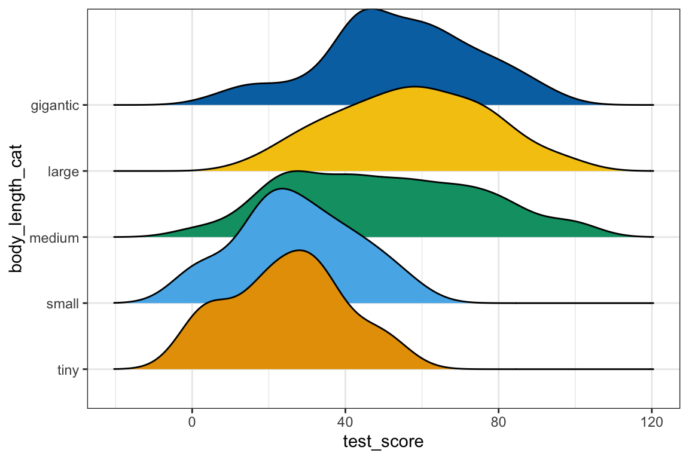
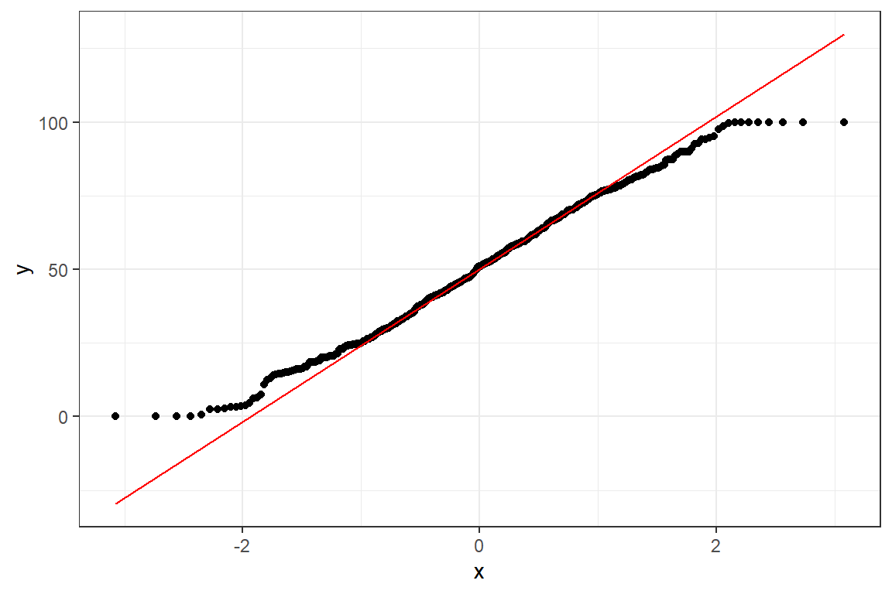
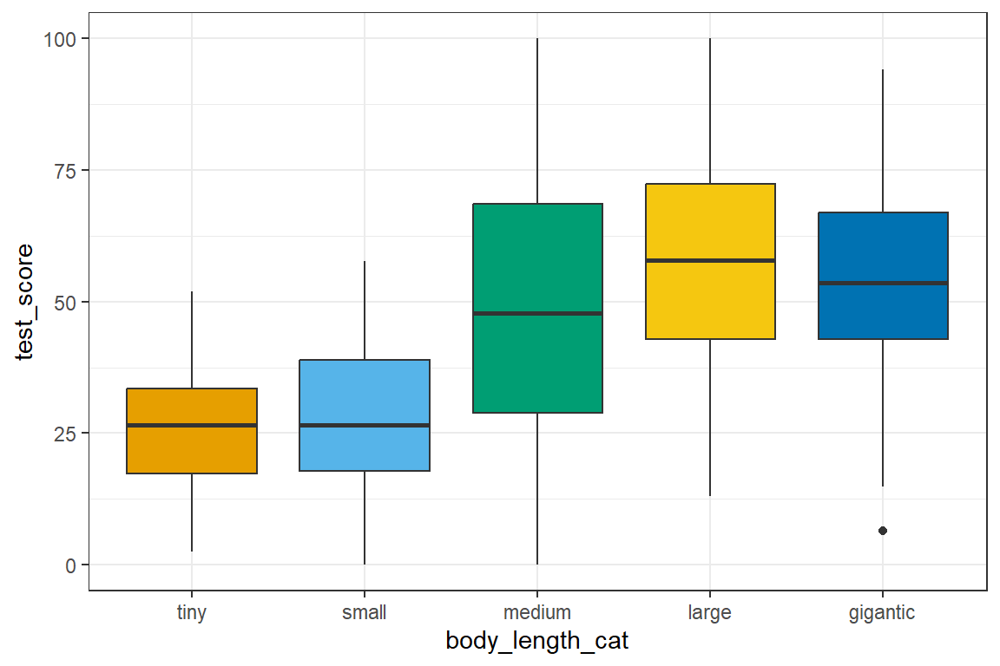
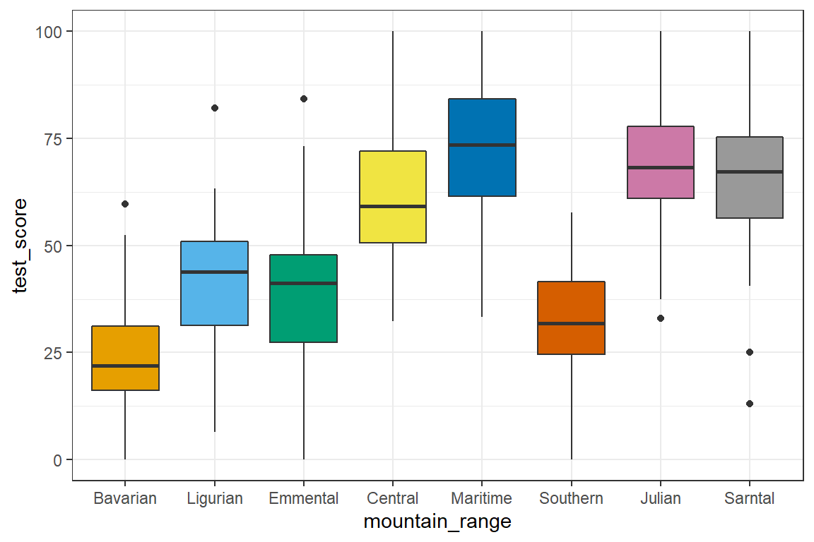
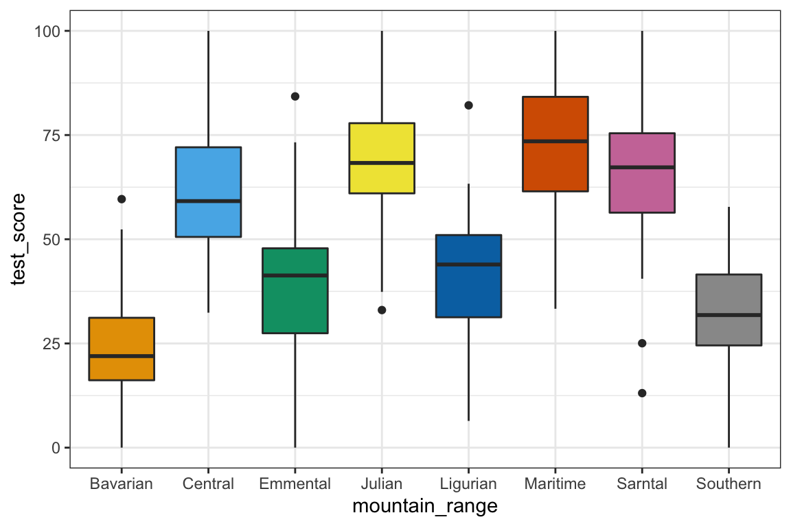
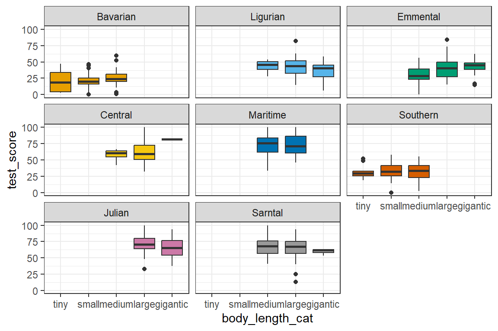
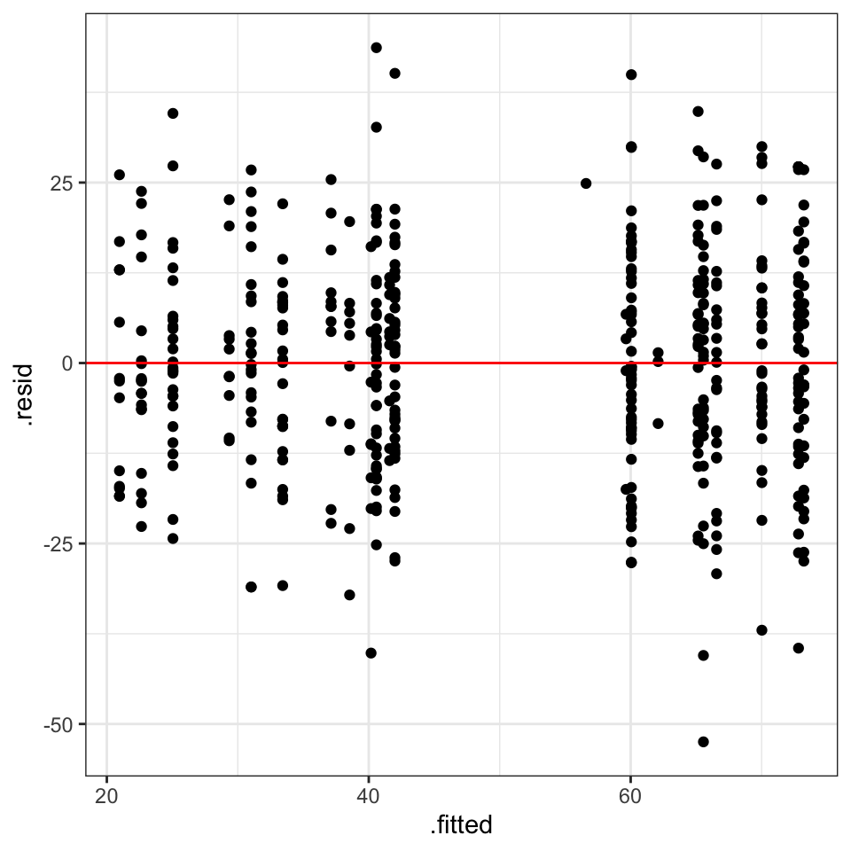
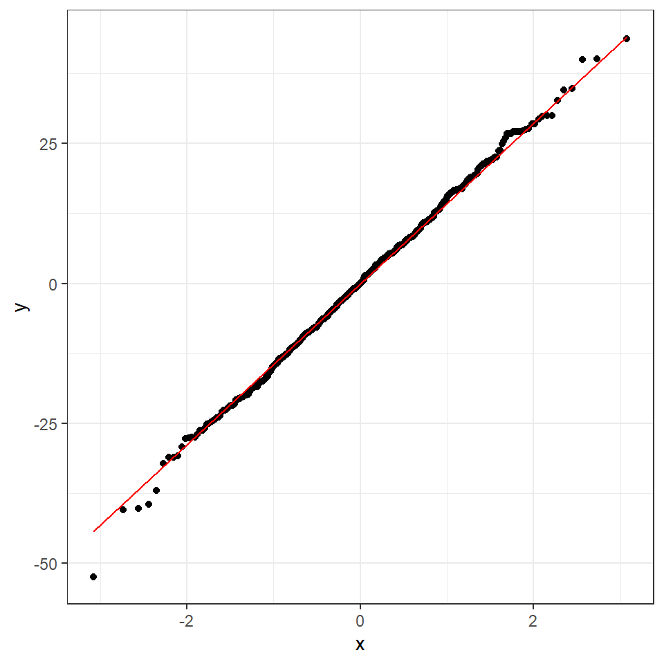
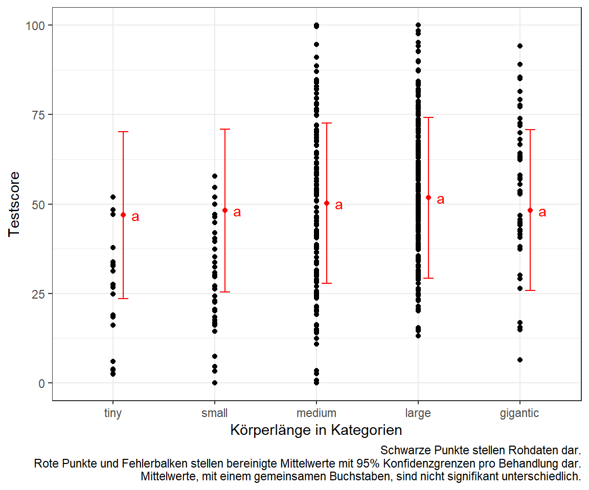
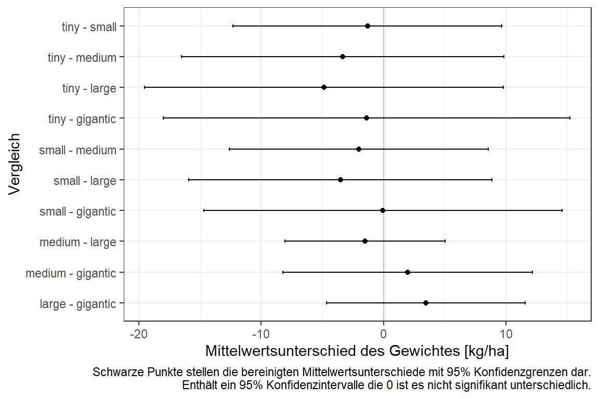

44 Lineare gemischte Modelle
Version vom November 07, 2022 um 11:11:08
Du findest auf YouTube Lineare gemischte Modelle als Video Reihe. Ich werde zwar alles nochmal hier als Text aufschreiben, aber manchmal ist das Sehen und Hören dann einfacher.
Dieses Kapitel basiert auf dem tollen Tutorium von Gabriela K Hajduk. Die Daten und Inhalte wurden von mir teilweise gekürzt sowie inhaltlich angepasst.
44.1 Annahmen an die Daten
Im folgenden Kapitel zu den linearen gemischten Modellen gehen wir davon aus, dass die Daten in der vorliegenden Form ideal sind. Das heißt wir haben weder fehlende Werte vorliegen, noch haben wir mögliche Ausreißer in den Daten. Auch wollen wir keine Variablen selektieren. Wir nehmen alles was wir haben mit ins Modell. Sollte eine oder mehre Bedingungen nicht zutreffen, dann schaue dir einfach die folgenden Kapitel an.
- Wenn du fehlende Werte in deinen Daten vorliegen hast, dann schaue bitte nochmal in das Kapitel 38 zu Imputation von fehlenden Werten.
- Wenn du denkst, dass du Ausreißer oder auffälige Werte in deinen Daten hast, dann schaue doch bitte nochmal in das Kapitel 36 zu Ausreißer in den Daten.
- Wenn du denkst, dass du zu viele Variablen in deinem Modell hast, dann hilft dir das Kapitel 36 bei der Variablenselektion.
Das Thema Modellvergleich und Variablenselektion ist im Falle des linearen gemischten Modells nochmal etwas spezieller. Wir gehen hier auch nochmal in einem Abschnitt drauf ein, wie wir das hier in dem Fall von linearen gemischten Modellen machen.
44.2 Genutzte R Pakete für das Kapitel
Wir wollen folgende R Pakete in diesem Kapitel nutzen.
pacman::p_load(tidyverse, magrittr, conflicted, broom, see,
multcomp, emmeans, lme4, broom.mixed,
parameters, ggridges, scales, performance)
conflict_prefer("select", "dplyr")
conflict_prefer("filter", "dplyr")Am Ende des Kapitels findest du nochmal den gesamten R Code in einem Rutsch zum selber durchführen oder aber kopieren.
44.3 Daten
In diesem fiktiven Datenbeispiel wollen wir uns die Testscores eines Intelligentest bei \(N = 480\) Drachen anschauen. Wir sind dafür an acht Berge gefahren und haben die dortigen Drachen an den drei Flanken des Berges getestet. Daher hat der Faktor mountain_range acht Level mit Bavarian, Ligurian, Emmental, Central, Maritime, Southern, Julian, und Sarntal. Die drei Flanken des Berges bilden wir im Faktor site mit den Leveln north, east und south ab. In Abbildung 44.1 sehen wir eine Skizze für drei Berge mit den jeweiligen Flanken, wo gemessen wurde.

Die Daten liegen in dem Datensatz dragons.csv ab. Wir müssen aber noch einen Faktor body_length_cat bilden in dem wir die body_length der einzelnen Drachen in Kategorien umwandeln. Wir wollen später noch Gruppenvergleiche rechnen und brauchen daher einen Faktor mit Leveln. Daher nutzen wir die Funktion case_when() um einen Faktor mit fünf Größenkategorien zu bilden. Danach müssen wir wie immer noch die character Spalten in die entsprechenden Faktoren umwandeln.
dragons_tbl <- read.csv2("data/dragons.csv") %>%
mutate(body_length_cat =
case_when(body_length < 170 ~ "tiny",
body_length >= 170 & body_length < 180 ~ "small",
body_length >= 180 & body_length < 200 ~ "medium",
body_length >= 200 & body_length < 220 ~ "large",
body_length >= 220 ~ "gigantic"),
body_length_cat = as_factor(body_length_cat),
mountain_range = as_factor(mountain_range),
site = factor(site, labels = c("north", "east", "south"))) %>%
select(test_score, body_length, body_length_cat, everything())Es ergibt sich dann der Datensatz wie in Tabelle 44.1 gezeigt. Wir belassen die Körperlänge der Drachen in der kontinuierlichen Form nochmal mit in den Daten.
| test_score | body_length | body_length_cat | mountain_range | site | |
|---|---|---|---|---|---|
| 1 | 16.15 | 165.55 | tiny | Bavarian | north |
| 2 | 33.89 | 167.56 | tiny | Bavarian | north |
| 3 | 6.04 | 165.88 | tiny | Bavarian | north |
| 4 | 18.84 | 167.69 | tiny | Bavarian | north |
| 5 | … | … | … | … | … |
| 477 | 59.37 | 213.58 | large | Sarntal | south |
| 478 | 68.75 | 207.63 | large | Sarntal | south |
| 479 | 74.89 | 198.25 | medium | Sarntal | south |
| 480 | 65.95 | 208.06 | large | Sarntal | south |
Bevor wir mit dem Modellieren beginnen, wollen wir erstmal visuell überprüfen, ob unser Outcome \(y\) mit dem Testscore auch normalverteilt ist. Wir benötigen für das klaissche lineare gemischte Modell ein normalverteiltes Outcome \(y\). In Abbildung 44.2 sehen wir das Histogramm der Verteilung des Testscores für alle \(N = 480\) Drachen.
ggplot(dragons_tbl, aes(test_score)) +
geom_histogram() +
theme_bw() 
Wir können in der Abbildung 44.3 auch nochmal schauen, ob die Annahme der annährenden Normalverteilung für unseren Testscore auch für jedes Level unseres Faktors der Körperlängen gegeben ist. Wir sehen auch hier, dass der Testscore einer Normalverteilung über alle Kategorien der Körperlänge folgt.
ggplot(dragons_tbl, aes(y = body_length_cat, x = test_score, fill = body_length_cat)) +
theme_bw() +
stat_density_ridges() +
theme(legend.position = "none") +
scale_fill_okabeito() 
Natürlich können wir uns hier noch weitere Abbildungen erstellen, aber hier soll es erstmal reichen. Wir sehen, dass der Testscore einer Normalverteilung folgt und dass die Varianzen vermutlich homogen sind, da die Histogramme ungefähr gleich breit sind. Ja, ein wenig unterscheiden sich die Verteilungen, aber so gravierend ist es erstmal nicht.
44.4 Modellierung
Im Folgenden wollen wir uns verschiedene statistische Modelle anschauen um uns dem linearen gemischten Modell einmal anzunähern. Dabei beginnen wir mit einem simplen Gaussian lineare Modell mit einem Faktor \(f_1\):
\[ y \sim f_1 \]
Wir haben also nur einen Faktor in unserem Modell vorliegen und ignorieren die restlichen in den Daten vorhandenen Variablen.
Als zweites Modell betrachten wir eine multiples Gaussian lineares Modell mit einem Faktor \(f_1\) und einem Blockfaktor \(b_1\):
\[ y \sim f_1 + b_1 \]
Jetzt erweitern wir das Modell nochmal um einen Block oder auch Clustereffekt. Das heißt, wir haben alle Beobachtungen nicht auf einem Feld oder in einem Stall durchgeführt, sondern an mehreren Orten.
Der eigentliche Bruch kommt jetzt. Wie wollen wir den Effekt des Blocks betrachten? Hier entscheidet sich, ob wir den Block als festen Effekt (eng. fixed effect) oder als zufälligen Effekt (eng. random effect) ausweisen wollen. Zuerst ist dies eine Modellierungsentscheidung. Wir müssen uns also zwischen zwei Modellen entscheiden. Daher können wir auch beide Arten bauen und dann Modelle vergleichen. Machen wir dann auch am Ende des Kapitels.
Die Idee hinter dem Modell mit festen Effekten ist, dass die beobachteten Effektgrößen von Block zu Block variieren können, was aber nur auf den Stichprobenfehler \(\epsilon\) zurückzuführen ist. In Wirklichkeit sind die wahren Effektgrößen alle gleich: Sie sind fix. (siehe auch The Fixed-Effect Model)
Das Modell der zufälligen Effekte geht davon aus, dass es nicht nur eine wahre Effektgröße gibt, sondern eine Verteilung der wahren Effektgrößen. Das Ziel des Modells mit zufälligen Effekten ist es daher nicht, die eine wahre Effektgröße aller Studien zu schätzen, sondern den Mittelwert der Verteilung der wahren Effekte. (siehe auch The Random-Effect Model)
Daher kommt jetzt als drittes Model ein multiples Gaussian lineares gemischtes Modell mit einem festen Faktor \(f_1\) und einem zufälligen Blockfaktor \(z_1\):
\[ y \sim f_1 + 1|z_1 \]
Wir schreiben in R den Term für da zufällige Modell in der Form \(z_0|z_1\). Meist setzen wir den Intercept \(z_0\) für den zufälligen Effekt auf 1.
Abschießend schauen wir uns noch ein multiples Gaussian lineares gemischtes Modell mit einem festen Faktor \(f_1\) und einem zufälligen Blockfaktor \(z_2\) genested in einem einem zufälligen Blockfaktor \(z_1\):
\[ y \sim f_1 + 1|z_1/z_2 \]
Das heißt, dass der zufällige Blockfaktor \(z_2\) in den zufälligen Blockfaktor \(z_1\) genested ist. Das heist, die Faktorlevel des Blockfaktors \(z_2\) finden sich jeweils nur in jeweils einem der Faktorlevel des Blocks \(z_1\). Das klingt jetzt etwas schräg, also einmal ein Beispiel. Wir haben eine Schule, dann sind die Schulklassen dieser Schule in der Schule genested. Es gibt diese spezifischen Klassen mit den Schülern schlichtweg nicht in anderen Schulen.
Bevor wir jetzt mit dem Modellieren beginnen, müssen wir noch kurz in einem QQ-Plot schauen, ob unser Ourcome testscore auch ungefähr normalverteilt ist. Abbildung 44.4 zeigt den QQ-Plot des Testscores. Wir sehen, dass der Hauptteil der Beobachtungen auf der Geraden liegt und wir nehmen daher an, dass der Testscore zumindest approximativ normalverteilt ist. Wir können also mit einem gaussian linearen gemischten Modell weitermachen.
ggplot(dragons_tbl, aes(sample = test_score)) +
stat_qq() + stat_qq_line(color = "red") +
theme_bw() +
scale_color_okabeito()
Schauen wir uns nun als erstes das Modell lm_simple_fit einmal an. Wir bauen das Modell nur mit der Faktorvariable body_length_cat. Wir erhalten dann gleich die Ausgabe des Modells über die Funktion model_parameters() in einer aufgearbeiteten Form.
lm_simple_fit <- lm(test_score ~ body_length_cat, data = dragons_tbl)
lm_simple_fit %>% model_parameters()Parameter | Coefficient | SE | 95% CI | t(475) | p
----------------------------------------------------------------------------------
(Intercept) | 24.61 | 4.33 | [16.10, 33.12] | 5.68 | < .001
body length cat [small] | 2.63 | 5.39 | [-7.96, 13.21] | 0.49 | 0.626
body length cat [medium] | 24.89 | 4.68 | [15.70, 34.07] | 5.32 | < .001
body length cat [large] | 32.50 | 4.55 | [23.56, 41.43] | 7.15 | < .001
body length cat [gigantic] | 29.32 | 5.20 | [19.10, 39.54] | 5.64 | < .001Der Intercept beinhaltet den Mittelwert für die Drachen des Levels [tiny]. Die jeweiligen Koeffizienten dann die Abweichung von den Drachen des Levels [tiny]. Daher sind Drachen des Levels [small] ungefähr um \(2.63\) Einheiten intelligenter. Wir sehen dann an dem \(p\)-Wert, ob sich die Koeffizienten signifikant von 0 unterscheiden. In Abbildung 44.5 sehen wir nochmal die Boxplots der einzelnen Testscores aufgeteilt nach der Körpergröße. Wir erkennen, dass die kleineren Drachen tendenziell dümmer sind als die großen Drachen. Wir sehen zwei Plateaus.
ggplot(dragons_tbl, aes(x = body_length_cat, y = test_score, fill = body_length_cat)) +
theme_bw() +
geom_boxplot() +
theme(legend.position = "none") +
scale_fill_okabeito() 
Nun haben wir aber nicht nur die Körpergrößen gemessen sondern auch auf welchem Berg wir die jeweiligen Drachen gefunden haben. Nun könnte es sein, dass der Berg einen viel größeren Einfluss auf die Inteliegenz hat als die Drachenkörpergröße. Wir könnten einen Confoundereffekt durch die Berge vorliegen haben. Ergänzen wir also das Modell um den Faktor mountain_range und erhalten das Modell lm_mountain_fit.
lm_mountain_fit <- lm(test_score ~ body_length_cat + mountain_range, data = dragons_tbl)
lm_mountain_fit %>% model_parameters()Parameter | Coefficient | SE | 95% CI | t(468) | p
----------------------------------------------------------------------------------
(Intercept) | 20.93 | 3.34 | [14.36, 27.49] | 6.27 | < .001
body length cat [small] | 1.67 | 3.89 | [-5.98, 9.32] | 0.43 | 0.668
body length cat [medium] | 3.55 | 3.72 | [-3.76, 10.85] | 0.95 | 0.341
body length cat [large] | 3.59 | 4.30 | [-4.86, 12.03] | 0.83 | 0.405
body length cat [gigantic] | 0.08 | 4.85 | [-9.45, 9.60] | 0.02 | 0.988
mountain range [Ligurian] | 17.33 | 3.58 | [10.28, 24.37] | 4.83 | < .001
mountain range [Emmental] | 15.91 | 3.63 | [ 8.79, 23.04] | 4.39 | < .001
mountain range [Central] | 35.62 | 3.69 | [28.36, 42.88] | 9.64 | < .001
mountain range [Maritime] | 48.75 | 3.24 | [42.39, 55.11] | 15.06 | < .001
mountain range [Southern] | 8.47 | 2.74 | [ 3.08, 13.85] | 3.09 | 0.002
mountain range [Julian] | 45.74 | 3.86 | [38.15, 53.33] | 11.85 | < .001
mountain range [Sarntal] | 41.03 | 3.30 | [34.54, 47.53] | 12.42 | < .001Wie wir sehen, werden nun die Körpergrößen der Drachen nicht mehr als signifikant ausgegeben. Die Effekte der Körpergröße auf den Testscore sind auch viel kleiner geworden, wenn wir die mountain_range mit in das Modell nehmen. Anscheinend hat der Berg auf dem wir den Drachen getroffen haben einen viel größeren Einfluss auf die Intelligenz als die Körpergröße. Wir können uns den Zusammenhang zwischen dem Testscore und dem Berg auch in der Abbildung 44.6 einmal anschauen.
Eigentlich würden wir erwarten, dass es keinen Effekt der Berge auf den Testscore der Drachen gibt. Es müsste eigentlich egal sein, wo wir einen Drachen befragen, wenn wir nur an der Körpergröße und dem Testscore interessiert sind. Wir sehen jedoch in der Abbildung 44.6 einen klaren Unterschied zwischen den Bergen im Bezug auf den Testscore.
ggplot(dragons_tbl, aes(mountain_range, test_score, fill = mountain_range)) +
geom_boxplot() +
theme_bw() +
theme(legend.position = "none") +
scale_fill_okabeito()
In der Abbildung 44.7 sehen wir den Zusammenhang von Testscore und der Körpergröße sowie den Bergen auf denen das Interview stattgefunden hat. so langsam dämmert uns warum wir hier einen Effekt der Körperlänge zu dem Testscore sehen. Die kleineren Drache sind alle nur auf bestimmten Bergen zu finden! Betrachten wir die Berge mit in dem Modell, dann hat die Körpergröße keinen Einfluß mehr.
ggplot(dragons_tbl, aes(x = body_length_cat, y = test_score, fill = mountain_range)) +
geom_boxplot(position = position_dodge(preserve = "single")) +
theme_bw() +
scale_fill_okabeito() +
labs(fill = "Mountain")
Der Zusammenhang wird vielleicht in Abbildung 44.8 nochmal klarer. Hier schauen wir uns den Zusamenhang wieder für die Körperlänge getrennt für die Berge an. Nur zeichnen wir jetzt jeden einzelnen Berg in ein Subplot. Wir sehen, dass es hier fast keinen Unterschied macht, wie lang die Drachen sind. Der Testscore ist immer gleich. Was einen Unterschied macht, sind die Berge.
ggplot(dragons_tbl, aes(x = body_length_cat, y = test_score, fill = mountain_range)) +
geom_boxplot(position = position_dodge(preserve = "single")) +
theme_bw() +
scale_fill_okabeito() +
labs(fill = "Mountain") +
theme(legend.position = "none") +
facet_wrap(~ mountain_range) 
Schauen wir uns nun einmal ein lineares gemischtes Modell an. Wir nutzen daszu das R Paket lme4. Wir haben auch noch andere Pakete zur Aswahl, aber wir nutzen hier erstmal das gängiste Paket. Um ein lineares gemischtes Modell in R zu schätzen nutzen wir die Funktion lmer(). Die Funktion lmer() nimmt an, dass das Outcome test_score normalverteilt ist. Wir haben diese Annahme ja weiter oben in dem QQ-Plot überprüft.
In einem lineare gemischten Modell müssen wir die festen Effekte sowie die zufälligen Effekte definieren. Die festen Effekte werden ganz normal wie wir es gewohnt sind in das Modell eingegeben. Die zufälligen Effkete schreiben wir in eine Klammer in der Form (1|).
Wir schreiben (1|moutain_range) und definieren damit die Variable mountain_range als zufälligen Effekt im Modell. Wir schreiben 1| vor mountain_range, da wir für jeden Berg die gleiche Steigung von Körperlänge und Testscore annehmen. Wir können dann später noch das Model komplizierter aufbauen und jedem Berg eine eigene Steigung erlauben. Bauen wir uns jetzt erstmal ein lineares gemischtes Modell mit einem festen Effekt body_length_cat und einem zufälligen Effekt (1|mountain_range).
lmer_1_fit <- lmer(test_score ~ body_length_cat + (1 | mountain_range), data = dragons_tbl)
lmer_1_fit %>% model_parameters()# Fixed Effects
Parameter | Coefficient | SE | 95% CI | t(473) | p
----------------------------------------------------------------------------------
(Intercept) | 46.85 | 7.43 | [32.25, 61.45] | 6.30 | < .001
body length cat [small] | 1.68 | 3.89 | [-5.97, 9.33] | 0.43 | 0.666
body length cat [medium] | 4.08 | 3.71 | [-3.20, 11.37] | 1.10 | 0.271
body length cat [large] | 4.49 | 4.27 | [-3.90, 12.88] | 1.05 | 0.293
body length cat [gigantic] | 1.03 | 4.81 | [-8.43, 10.49] | 0.21 | 0.831
# Random Effects
Parameter | Coefficient | SE | 95% CI
--------------------------------------------------------------------
SD (Intercept: mountain_range) | 18.21 | 4.94 | [10.70, 30.98]
SD (Residual) | 14.96 | 0.49 | [14.03, 15.95]Unser Model sieht etwas aufgeräumter aus. Als feste Effekte haben wir nur noch die Körperlänge body_length_cat und die dazugehörigen Koeffizienten des Modells. Unsere Variable mountain_range verschwindet dann in den zufälligen Effekten. Die Funktion summary liefert uns den gesamten Ausdruck, der etwas überwältigend ist. Vieles brauchen wir auch nicht davon.
lmer_1_fit %>% summary()
Was wir extrahieren wollen ist die Information von den zufälligen Effekten. Wir wollen wissen, wieviel Varianz durch die zufälligen Effekte erklärt wird. Wir nutzen dazu die Funktion VarCorr(), die uns erlaubt die Information zu en zufälligen Effekten zu extrahieren und auszugeben.
print(VarCorr(lmer_1_fit), comp = "Variance") Groups Name Variance
mountain_range (Intercept) 331.422
Residual 223.828 Wieviel Varianz erklären nun die Berge? Wir können die erklärte Varianz der zufälligen Effekte einfach berechnen. Wir vergleichen die erklärte Varianz von mountain_range mit der gesamten Varianz. Die gesamte Varianz ist die Varianz aller zufälligen Effekte plus der residualen Vamrianz. Wir erhalten dann \(R^2_{random} = 339.7/(339.7 + 223.8) \approx 0.60\). Wir sehen, dass ca. 60% der Varianz in unseren Daten von der Variable mountain_range verursacht wird.
Wir können die Funktion model_performance() nutzen um mehr über den Fit des Modells zu erfahren. Das R2 (cond.) ist faktisch das gleiche wie wir gerade oben berechnet haben. Wir benötigen also nicht immer den Ausdruck der zufälligen Effekte. Wir können auch die Informationen aus der Funktion model_performance() nehmen.
lmer_1_fit %>% model_performance()# Indices of model performance
AIC | AICc | BIC | R2 (cond.) | R2 (marg.) | ICC | RMSE | Sigma
----------------------------------------------------------------------------------
3983.403 | 3983.640 | 4012.620 | 0.598 | 0.004 | 0.597 | 14.774 | 14.961In der Abbildung Abbildung 44.9 schauen wir uns nochmal an, ob wir das Modell auch gut gefittet haben. Der Residualplot sieht gut aus, wir erkennen kein Muster. Ebenso sieht der QQ-Plot gut aus, die Beobachtungen liegen alle auf der Geraden. Wir sind mit dem Modell soweit erstmal ganz zufrieden.


Wir haben noch eine Variable in unseren Daten ignoriert. Wir haben uns bis jetzt nicht die Variabl site angeschaut. Auf jedem Berg haben wir die Drachen noch auf verschiedenen Flanken des Berges site befragt. Das heißt, wir haben die Variable site, die in der Variable mountain_site genestet ist. Wir schreiben daher ein neues Modell und nutzen die Schreibweise (1|mountain_range/site) um zu beschreiben, dass site immer zusamen in einem Berg vorkommt. Schaue dir dazu nochmal die Abbidlung ganz zu Beginn dieses Kapitels an um die Zusammenhänge nochmal visualisiert zu bekommen.
lmer_2_fit <- lmer(test_score ~ body_length_cat + (1|mountain_range/site), data = dragons_tbl)
lmer_2_fit %>% model_parameters()# Fixed Effects
Parameter | Coefficient | SE | 95% CI | t(472) | p
-----------------------------------------------------------------------------------
(Intercept) | 46.89 | 7.80 | [ 31.56, 62.22] | 6.01 | < .001
body length cat [small] | 1.32 | 3.99 | [ -6.51, 9.16] | 0.33 | 0.740
body length cat [medium] | 3.34 | 4.61 | [ -5.73, 12.41] | 0.72 | 0.470
body length cat [large] | 4.85 | 5.15 | [ -5.26, 14.97] | 0.94 | 0.346
body length cat [gigantic] | 1.37 | 5.83 | [-10.08, 12.83] | 0.24 | 0.814
# Random Effects
Parameter | Coefficient | SE | 95% CI
-------------------------------------------------------------------------
SD (Intercept: site:mountain_range) | 4.79 | 1.29 | [ 2.83, 8.12]
SD (Intercept: mountain_range) | 17.88 | 4.97 | [10.36, 30.84]
SD (Residual) | 14.46 | 0.48 | [13.55, 15.43]Das Modell hat nun einen weiteren zufälligen Effekt. Es werden jetzt auch nochmal für jeden Berg die Flankeneffekte mit berücksichtigt. Hat das überhaupt einen Einfluss auf das Modell? Schauen wir uns einmal die Modellgüte mit der Funktion model_performance() an.
lmer_2_fit %>% model_performance()# Indices of model performance
AIC | AICc | BIC | R2 (cond.) | R2 (marg.) | ICC | RMSE | Sigma
----------------------------------------------------------------------------------
3970.693 | 3970.999 | 4004.084 | 0.623 | 0.004 | 0.621 | 14.120 | 14.460Wir sehen, dass sich die erklärte varianz leicht erhöht hat. Die \(R^2_{random}\) liegt jetzt bei \(0.623\) also fast 62%. Etwas besser als vorher, aber auch nicht unbedingt sehr viel mehr.
Wie können wir nun unsere vier Modelle miteinander vergleichen? Wir haben ja folgende Modelle vorliegen:
- Das simple lineare Modell
lm_simple_fitmittest_score ~ body_length_cat. - Das multiple lineare Modell
lm_mountain_fitmittest_score ~ body_length_cat + mountain_range. - Das gemischte lineare Modell
lmer_1_fitmittest_score ~ body_length_cat + (1|mountin_range). - Das genestete gemischte lineare Modell
lmer_2_fitmittest_score ~ body_length_cat + (1|mountain_range/site).
Um die Modelle miteinander zu vergleichen können wir die Funktion compare_performance() nutzen. Wir erhalten mit der Option rank = TRUE auch eine Sortierung der Modelle wieder. Das beste Modell steht dann ganz oben.
compare_performance(lm_simple_fit, lm_mountain_fit, lmer_1_fit, lmer_2_fit, rank = TRUE)# Comparison of Model Performance Indices
Name | Model | RMSE | Sigma | AIC weights | BIC weights | Performance-Score
-------------------------------------------------------------------------------------------
lm_mountain_fit | lm | 14.772 | 14.960 | 1.000 | 0.330 | 83.11%
lmer_2_fit | lmerMod | 14.120 | 14.460 | 5.84e-05 | 0.655 | 75.00%
lmer_1_fit | lmerMod | 14.774 | 14.961 | 1.72e-07 | 0.016 | 46.11%
lm_simple_fit | lm | 20.661 | 20.770 | 1.24e-67 | 9.06e-62 | 0.00%In diesem Beispiel wäre sogar eine multiple lineare Regression das beste Modell. Wir würden also auch mit zwei festen Effekten die Variabilität der Berge richtig mdellieren. Der Effekt der Flanken auf den Testscore scheint ziemlich klein zu sein, so dass wir auch auf die Variable site verzichten können.
Was machen wir jetzt noch zum Schluß? Wir machen noch einen paarweisen Vergleich über alle Level der Vaeiable body_length_cat. Ich will hier nochmal zeigen, wie du einen multiplen Vergleich mit einem gemischten Modell in R rechnen kannst. Wir nutzen hier dann das R Paket emmeans um das compact letter display nutzen zu können.
Als erstes nutzen wir die Funktion emmeans um die multiplen Vergleich über alle Level des Faktors body_length_cat zurechnen.
res_lmer <- lmer_2_fit %>%
emmeans(~ body_length_cat) Im Weiteren nutzen wir jetzt das Objekt res_lmer um die Vergleiche zu rechnen und zu asjustieren. Wir nutzen die Bonferroni Methode für die Adjustierung der \(p\)-Werte.
res_lmer %>%
contrast(method = "pairwise", adjust = "bonferroni") contrast estimate SE df t.ratio p.value
tiny - small -1.3218 4.02 453 -0.329 1.0000
tiny - medium -3.3379 4.76 118 -0.701 1.0000
tiny - large -4.8531 5.31 148 -0.914 1.0000
tiny - gigantic -1.3744 6.02 152 -0.228 1.0000
small - medium -2.0161 3.83 134 -0.526 1.0000
small - large -3.5313 4.50 179 -0.784 1.0000
small - gigantic -0.0526 5.32 175 -0.010 1.0000
medium - large -1.5152 2.39 362 -0.634 1.0000
medium - gigantic 1.9635 3.71 229 0.529 1.0000
large - gigantic 3.4787 2.95 241 1.178 1.0000
Degrees-of-freedom method: kenward-roger
P value adjustment: bonferroni method for 10 tests Wenn wir an dem compact letter display interessiert sind, dann müsen wir die Funktion cld() nutzen. Was wir brauchen, hängt dann immer davon ab, was wir zeigen wollen und was die Fragestellung ist.
res_lmer_cld <- res_lmer %>%
cld(adjust = "bonferroni", Letters = letters) %>%
tidy() %>%
select(body_length_cat, estimate, conf.low, conf.high, .group) %>%
mutate(across(where(is.numeric), round, 2))
res_lmer_cld # A tibble: 5 × 5
body_length_cat estimate conf.low conf.high .group
<chr> <dbl> <dbl> <dbl> <chr>
1 tiny 46.9 23.6 70.2 " a"
2 small 48.2 25.5 71.0 " a"
3 gigantic 48.3 25.8 70.7 " a"
4 medium 50.2 27.8 72.7 " a"
5 large 51.7 29.2 74.2 " a" An dem compact letter display sehen wir schon, dass es keinen Unterschied zwischen den Gruppen bzw. Leveln des Faktors body_length_cat gibt. Wir sehen bei allen Leveln ein a. Wir haben keine signifikante Unterschiede.
In Abbildung 44.10 siehst du nochmal die Daten zusammen mit dem compact letter display dargestellt.
ggplot() +
theme_bw() +
geom_point(data = dragons_tbl, aes(x = body_length_cat, y = test_score)) +
geom_text(data = res_lmer_cld,
aes(x = body_length_cat , y = estimate, label = .group),
position = position_nudge(x = 0.2), color = "red") +
geom_errorbar(data = res_lmer_cld,
aes(ymin = conf.low, ymax = conf.high, x = body_length_cat),
color = "red", width = 0.1,
position = position_nudge(x = 0.1)) +
geom_point(data = res_lmer_cld,
aes(x = body_length_cat , y = estimate),
position = position_nudge(x = 0.1), color = "red") +
scale_color_okabeito() +
labs(x = "Körperlänge in Kategorien", y = "Testscore",
caption = "Schwarze Punkte stellen Rohdaten dar.
Rote Punkte und Fehlerbalken stellen bereinigte Mittelwerte mit 95% Konfidenzgrenzen pro Behandlung dar.
Mittelwerte, mit einem gemeinsamen Buchstaben, sind nicht signifikant unterschiedlich.")
Manchmal wollen wir auch die 95% Konfidenzintervalle anzeigen, dann müssen wir wiederum die Funktion contrast() nutzen. Wir lassen uns auch hier die adjustoerten \(p\)-Werte wiedergeben. Wir nutzen dann das Objekt res_lmer_tbl um die 95% Konfidenzintervalle zu plotten.
res_lmer_tbl <- res_lmer %>%
contrast(method = "pairwise") %>%
tidy(conf.int = TRUE) %>%
mutate(p.value = pvalue(adj.p.value),
across(where(is.numeric), round, 2)) %>%
select(contrast, estimate, p.value,
conf.low, conf.high)
res_lmer_tbl# A tibble: 10 × 5
contrast estimate p.value conf.low conf.high
<chr> <dbl> <chr> <dbl> <dbl>
1 tiny - small -1.32 0.997 -12.3 9.68
2 tiny - medium -3.34 0.956 -16.5 9.85
3 tiny - large -4.85 0.891 -19.5 9.81
4 tiny - gigantic -1.37 >0.999 -18.0 15.2
5 small - medium -2.02 0.985 -12.6 8.58
6 small - large -3.53 0.935 -15.9 8.87
7 small - gigantic -0.05 >0.999 -14.7 14.6
8 medium - large -1.52 0.969 -8.06 5.03
9 medium - gigantic 1.96 0.984 -8.23 12.2
10 large - gigantic 3.48 0.764 -4.64 11.6 In Abbildung 44.11 sehen wir die 95% Konfidenzintervalle für alle paarweisen Vergleiche der Körperlängen.
ggplot(res_lmer_tbl, aes(contrast, y=estimate, ymin=conf.low, ymax=conf.high)) +
geom_hline(yintercept=0, linetype="11", colour="grey60") +
geom_errorbar(width=0.1) +
geom_point() +
coord_flip() +
theme_bw() +
labs(x = "Vergleich", y = "Mittelwertsunterschied des Gewichtes [kg/ha]",
caption = "Schwarze Punkte stellen die bereinigten Mittelwertsunterschiede mit 95% Konfidenzgrenzen dar.
Enthält ein 95% Konfidenzintervalle die 0 ist es nicht signifikant unterschiedlich.")
44.5 Nested

https://stats.stackexchange.com/questions/228800/crossed-vs-nested-random-effects-how-do-they-differ-and-how-are-they-specified
https://www.statology.org/nested-anova-in-r/
44.6 GEE
https://data.library.virginia.edu/getting-started-with-generalized-estimating-equations/
https://rlbarter.github.io/Practical-Statistics/2017/05/10/generalized-estimating-equations-gee/